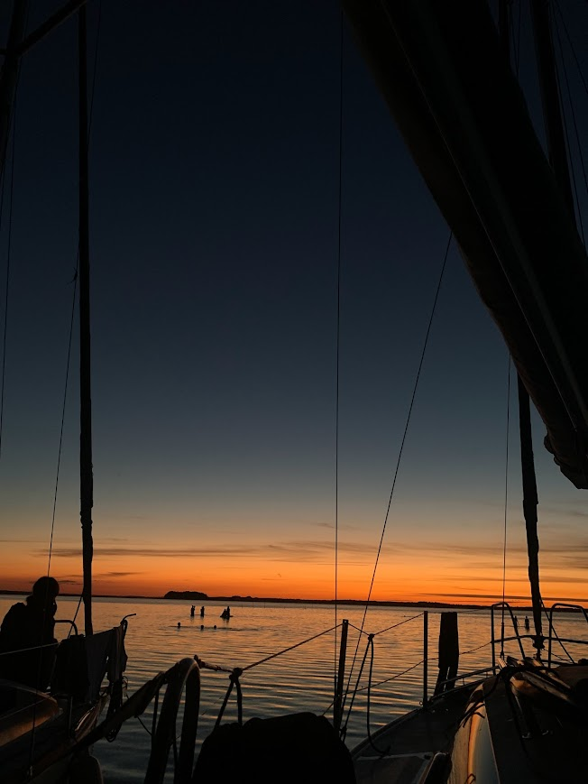
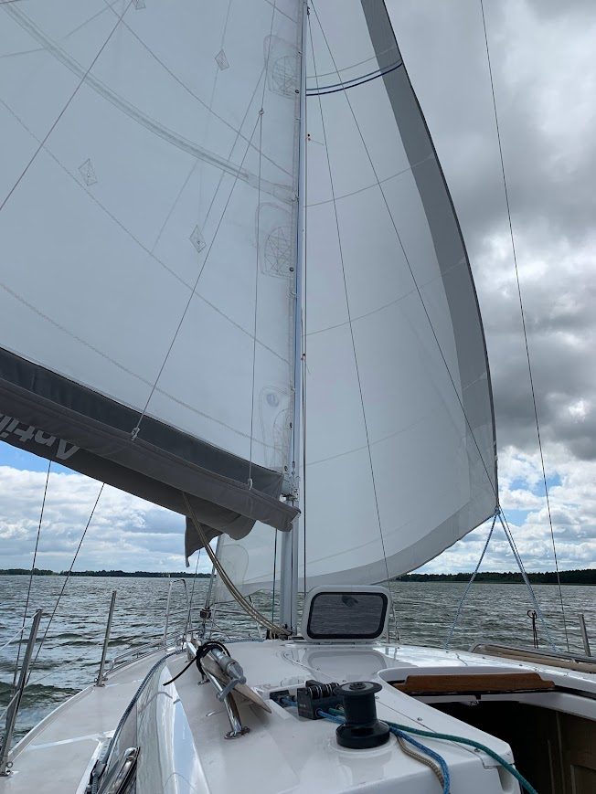
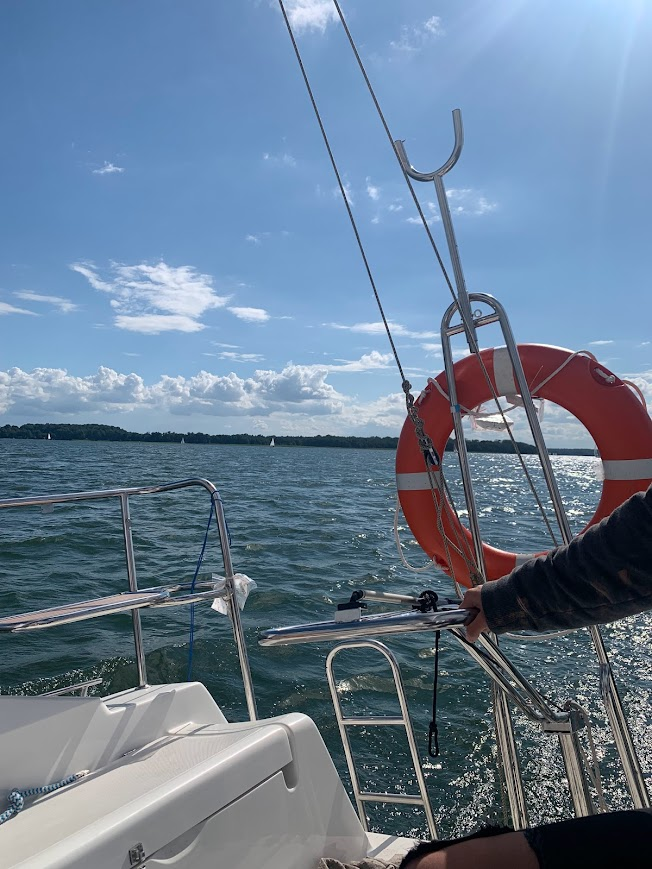

Jednym z moich największych zamiłowań są Mazury. Uwielbiam spędzać czas w tym malowniczym regionie Polski, który oferuje nie tylko piękne krajobrazy, ale również wiele możliwości aktywnego wypoczynku. Mazury to idealne miejsce na żeglowanie, wędkowanie, piesze wędrówki oraz obcowanie z naturą. Każdego roku staram się odwiedzić to miejsce, aby naładować baterie i cieszyć się spokojem, jaki tam panuje.


